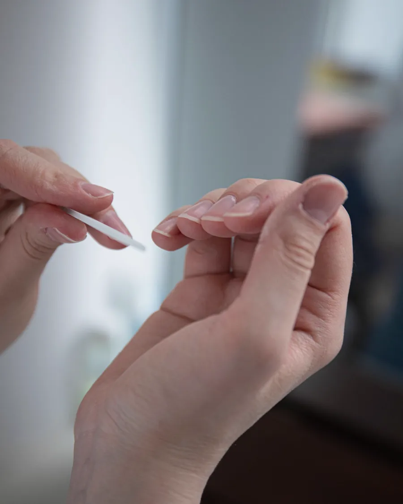
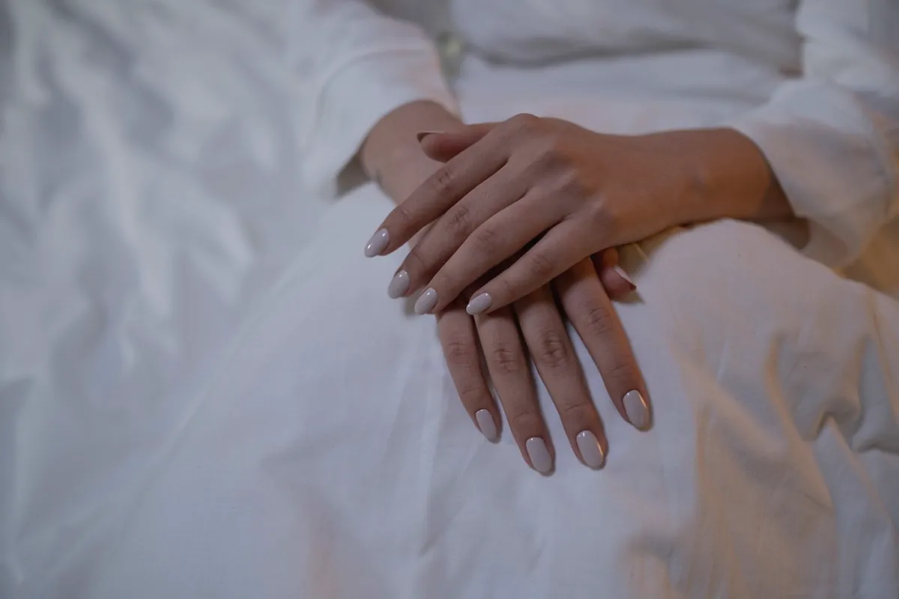
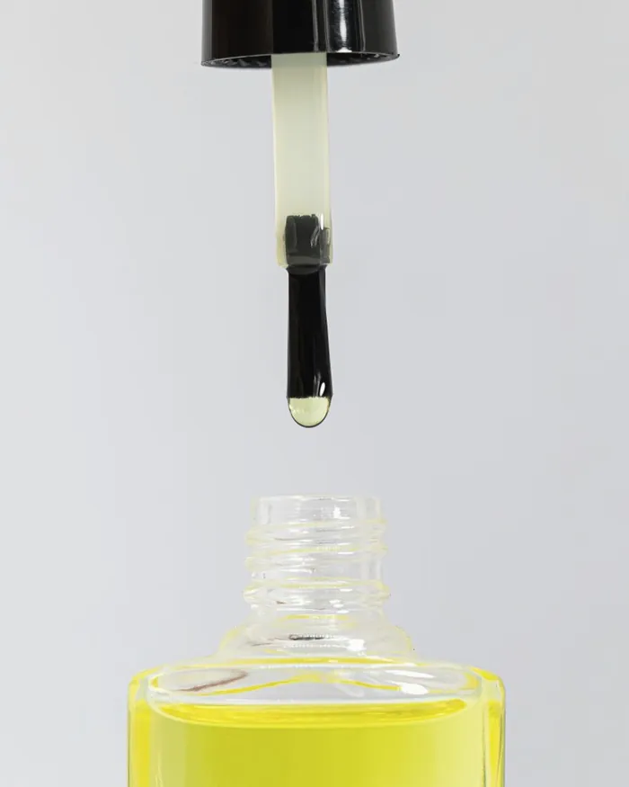
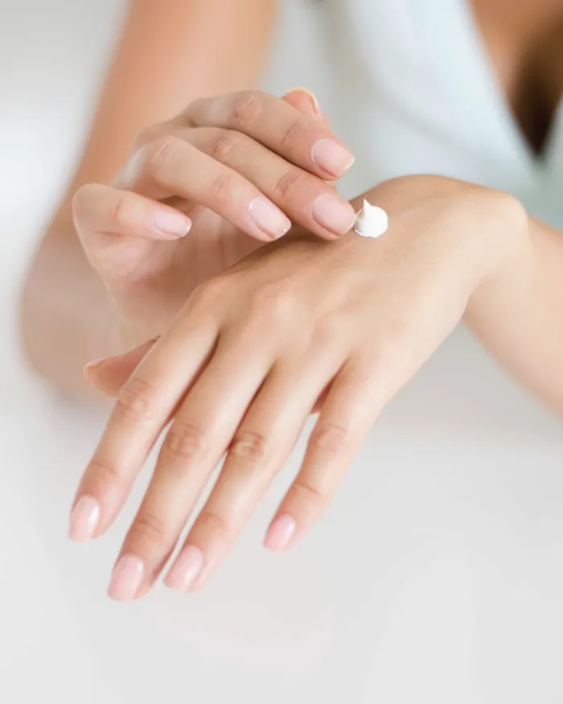
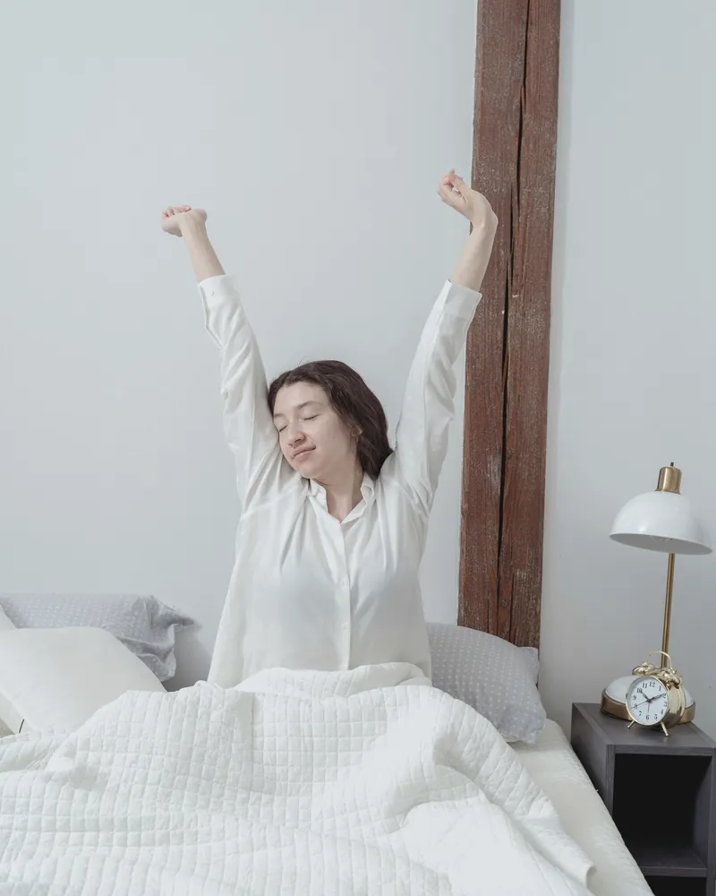
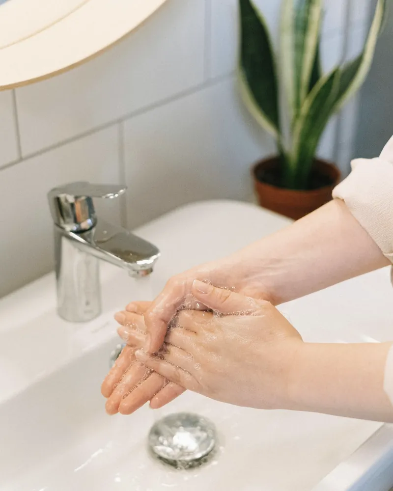
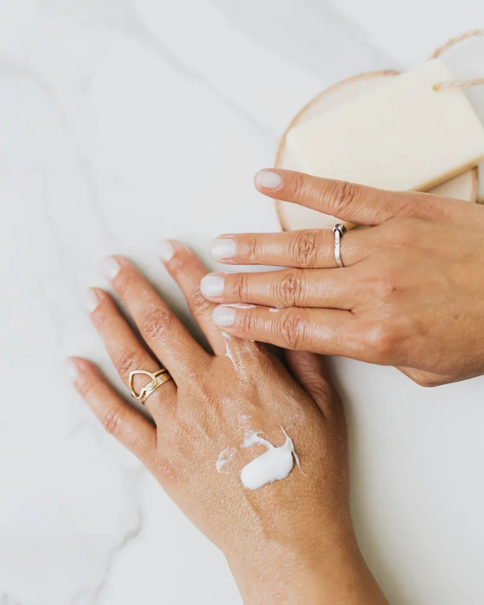
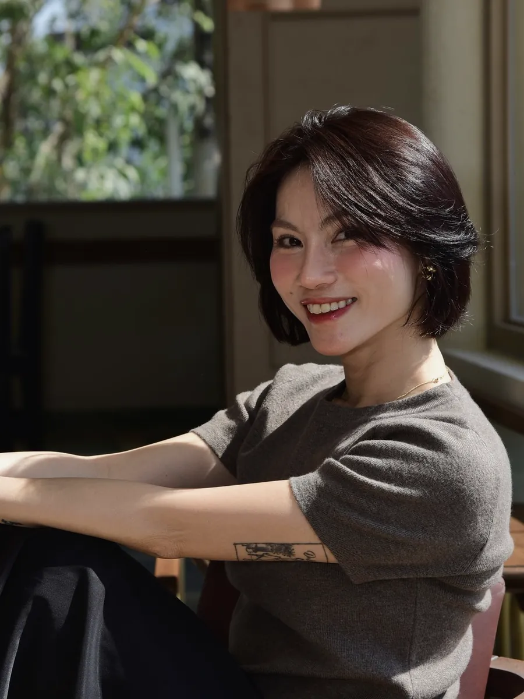

Grow
(1)自爪育成ケア
爪先の形と甘皮まわりを丁寧にケア。オイルで保湿して仕上げます。
こんな方に
- 短い爪を整えたい
- まずはケアだけ試したい
- ジェルをお休みしたい

深爪・薄い爪・二枚爪の
自爪育成サロン
短い爪のままでも、相談して大丈夫です。
hiyori では爪の状態に合わせて整え、毎日の保湿をお手伝いします。
ひとりのネイリストが、最初から最後まで担当します。

深爪や薄い爪の悩みを聞き、状態に合うお手入れを一緒に考えます。
無理に長さを出さず、自分のペースで続ける場所です。
あなたの爪が弱いから、ではありません。
爪の状態と、手の使い方を聞きます。お悩みに合わせて、ケアの順番を相談します。

爪先の形を整え、甘皮まわりをやさしくケアします。爪への負担を、まず減らします。

保湿を中心に、毎日のお手入れを考えます。家でのケアも一緒に決めます。
サロンでできるのは、月に一度
爪を育てるのは、毎日の小さな習慣です。

起きたら、まずオイルを一滴。爪とそのまわりになじませて、一日を始めます。
キーボードは、指の腹で。爪先に力をかけすぎない使い方を意識します。

水仕事のあとは、手と爪を保湿。洗剤を扱うときは手袋で保護します。

寝る前を、保湿の習慣に。爪とそのまわりに、オイルやクリームをなじませます。
難しいことは、ひとつもありません
続けられる形を、あなたの生活に合わせていっしょに決めます。
友だち追加だけで大丈夫です。相談だけでも。
明るいところで撮った爪の写真を、1枚。
住宅街の一室なので、予約の方にだけお伝えしています。
爪の状態と生活を聞いてから、ケアに入ります。
3〜4週間後が目安。無理のないペースで。

ネイリスト歴10年
ジェルで自分の爪を傷めた経験から、自爪育成の道へ。
2021年、自宅の一室で hiyori を開きました。
大事にしているのは、爪に負担をかけすぎないお手入れ
毎日の小さな積み重ねを、いちばん近くで見守ります。
3か月で、爪の白い部分が見えるように
人前で書類を渡すのが、怖くなくなりました。
水仕事のあとの保湿を教わって、半年
今は折れずに伸ばせています。
削らない付け替えに変えてから、薄さが気にならなくなりました
仕事で爪を短くしていても、きれいです。
個人の感想であり、効果を保証するものではありません。
予約時にジェルの種類と状態をお知らせください。オフの可否・方法・所要時間をご案内します。他店オフは別途1,650円（税込）です。
(01)状態や生活習慣によって異なります。初回にお手入れの目標と、無理なく通えるペースをご相談します。
(02)痛みを感じたら、すぐにお知らせください。痛み・腫れ・出血がある場合は施術を控え、皮膚科での相談をご案内します。
(03)大丈夫です。深爪や噛み癖の相談は、男性からも多くいただきます。
(04)予約の前の、相談だけでも大丈夫です
登録したら送るものは、3つ。